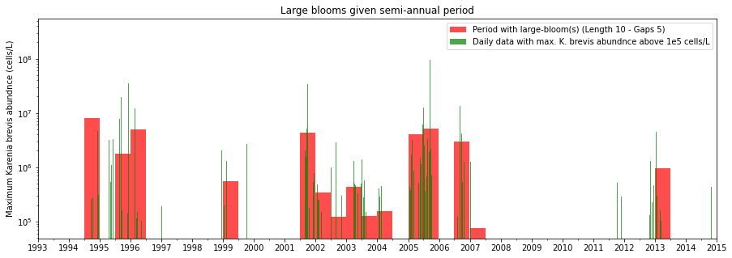
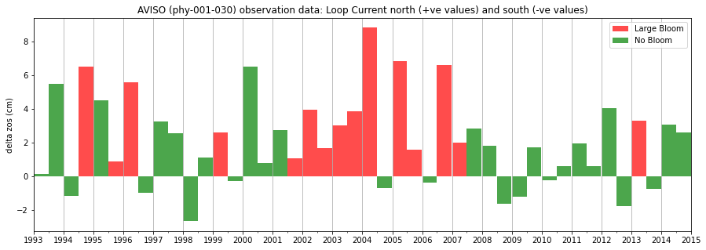
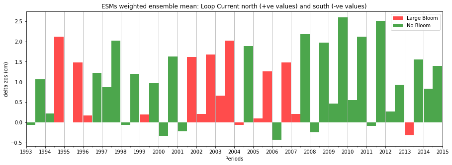

Processing code 3: KB data#
import numpy as np
import pandas as pd
pd.set_option('max_columns', None)
import matplotlib.pyplot as plt
import matplotlib.dates as mdates
import seaborn as sns
from datetime import date
from datetime import datetime
from dateutil.relativedelta import relativedelta
from pathlib import Path
import random
#AGU Poster code
---------------------------------------------------------------------------
OptionError Traceback (most recent call last)
Cell In[1], line 3
1 import numpy as np
2 import pandas as pd
----> 3 pd.set_option('max_columns', None)
4 import matplotlib.pyplot as plt
5 import matplotlib.dates as mdates
File ~\AppData\Local\miniconda3\Lib\site-packages\pandas\_config\config.py:274, in CallableDynamicDoc.__call__(self, *args, **kwds)
273 def __call__(self, *args, **kwds) -> T:
--> 274 return self.__func__(*args, **kwds)
File ~\AppData\Local\miniconda3\Lib\site-packages\pandas\_config\config.py:167, in _set_option(*args, **kwargs)
164 raise TypeError(f'_set_option() got an unexpected keyword argument "{kwarg}"')
166 for k, v in zip(args[::2], args[1::2]):
--> 167 key = _get_single_key(k, silent)
169 o = _get_registered_option(key)
170 if o and o.validator:
File ~\AppData\Local\miniconda3\Lib\site-packages\pandas\_config\config.py:134, in _get_single_key(pat, silent)
132 raise OptionError(f"No such keys(s): {repr(pat)}")
133 if len(keys) > 1:
--> 134 raise OptionError("Pattern matched multiple keys")
135 key = keys[0]
137 if not silent:
OptionError: Pattern matched multiple keys
Study area#


Sample Date: 199301-201412
Latitude: 26.50 28.00
Longitude: -85.01 -81.61
the periods from 1993 to 2007 are considered (15 years 60 periods)
1 degree lat/lon equals 111 km ( 0.1° = 11.1 km)
[113 183] [113 184] [114 183] [115 183] [116 183]]
[ 88 203] [ 88 204] [ 88 205] [ 88 206] [ 89 200] [ 89 201] [ 89 202] [ 90 197] [ 90 198] [ 90 199] [ 91 196] [ 91 197] [ 92 194] [ 92 195] [ 92 196]]
[1] KB data for the study area from 1993 to 2015#
#[1] Read data
df=pd.read_csv('Input/KB_Data.csv')
#[2] Convert date column to a datetime, and set and rename index
df['Sample Date'] = pd.to_datetime(df['Sample Date'])
df.index=df['Sample Date']
df.index.names = ['date']
#[3] Filter study area
df = df[~(df['Latitude'] <26.5)]
df = df[~(df['Latitude'] >28.0)]
df = df[~(df['Longitude'] >-81.61)]
df = df[~(df['Longitude'] <-85.0)]
#[4] Filter time period of interest
end_of_year=2014
df=df['1993-1-1':'{}-12-31'.format(end_of_year)]
#[5] Filter variables, and rename variables of interest
df = df[['Sample Date','Karenia brevis abundance (cells/L)']]
df.columns = ['Sample Date','max_cells/L_raw']
#[6] Get number of samples and maximum cell/L per day
samples_count=df['max_cells/L_raw'].groupby(level=0).count()
df=df.groupby(level=0).max()
df['num_of_samples']=samples_count
#[7] Resample to daily data with the maximum cell counts per day
df=df.resample('D').max()
#[8] Save filtered data
df.to_csv('Output/KB_daily_raw_{}.csv'.format(end_of_year))
df['1993-1'].head(5)
| Sample Date | max_cells/L_raw | num_of_samples | |
|---|---|---|---|
| date | |||
| 1993-01-01 | 1993-01-01 | 0.0 | 1.0 |
| 1993-01-02 | NaT | NaN | NaN |
| 1993-01-03 | NaT | NaN | NaN |
| 1993-01-04 | 1993-01-04 | 333.0 | 25.0 |
| 1993-01-05 | NaT | NaN | NaN |
[2] Karenia bravis and zos data analysis#
def plot_KB(data_plot_flag,df,Q,min_bloom_length,max_gaps_days,n_large_blooms,n_large_bloom_periods,bloom_periods_ratio):
#[1] Plot bloom perios
#Full data set
if data_plot_flag==1:
mask1=df['max_cells/L_raw']>=1e5
x1=df.index.copy()[mask1]
y1=df['max_cells/L_raw'].copy()[mask1]
elif data_plot_flag==2:
mask1=Q['max_cells/L_raw']>=1e5
x1=Q.index.to_timestamp().copy()[mask1]
y1=Q['max_cells/L_raw'].copy()[mask1]
#Periods with large blooms
mask2=Q['n_large_blooms'].notnull()
x2=Q.index.to_timestamp().copy()[mask2]
y2=Q['max_cells/L_raw'].copy()[mask2]
#display(y2)
#Bar chart
fig=plt.figure(figsize=(15,5))
ax=fig.add_subplot(1,1,1)
if Period=='Q':
BarW=92
elif Period=='2Q':
BarW=181
if data_plot_flag==1:
L1='Period with large-bloom(s) (Length {} - Gaps {})'.format(min_bloom_length,max_gaps_days)
L2='Daily data with max. K. brevis abundnce above 1e5 cells/L'
ax.bar(x2,y2,width=BarW,facecolor='red', align='edge',alpha=0.7, label=L1)
ax.bar(x1,y1,width=0.9,facecolor='green',align='edge', alpha=0.7, label=L2)
elif data_plot_flag==2:
L1='Period with max. K. brevis abundnce above 1e5 cells/L'
L2='Period with large-bloom(s) (Length {} - Gaps {})'.format(min_bloom_length,max_gaps_days)
ax.bar(x1,y1,width=BarW,facecolor='green', align='edge', alpha=0.7, label=L1)
ax.bar(x2,y2,width=BarW,facecolor='red', align='edge', alpha=0.7, label=L2)
plt.yscale('log')
#format the x-ticks and labels
years = mdates.YearLocator() # every year
if Period=='Q':
months = mdates.MonthLocator(bymonth=[1,4,7,10,13]) # every month
elif Period=='2Q':
months = mdates.MonthLocator(bymonth=[1,7,13]) # every month
years_fmt = mdates.DateFormatter('%Y')
ax.xaxis.set_major_locator(years)
ax.xaxis.set_major_formatter(years_fmt)
ax.xaxis.set_minor_locator(months)
#x-axis limit
Start=1993
End=end_of_year+1
start = datetime(year=Start, month=1, day=1, hour=0)
end = datetime(year=End, month=1, day=1, hour=0)
ax.set_xlim(start,end)
#Axis labels
#ax.set_xlabel('Periods')
ax.set_ylabel('Maximum Karenia brevis abundnce (cells/L)')
#Legend
ax.legend(loc='best')
#Grid
#ax.grid(which='major', axis='x')
#Title
# title='For a minium bloom length of {} days with a maximum of {}-day gaps (i.e, no data or values below 1e5), \n \
# the number of large-blooms, number of periods-with-large-bloom(s), ratio of periods-with-large-bloom(s), \
# are {:0.0f}, {} and {:0.2f}, respectively'. \
# format(min_bloom_length,max_gaps_days,n_large_blooms,n_large_bloom_periods,bloom_periods_ratio)
title='Large blooms given semi-annual period'
ax.set_title(title)
#Display results
#plt.show()
#display(Q)
plt.savefig('Output/KB.jpg')
def plot_zos(Period,end_of_year,zos_segment,Q,lat,lon,n_large_bloom_periods,bloom_periods_ratio,NewSeg):
#Plot LC-N and LC-S
if NewSeg==0:
zos_period_data_file='Input/zos_period_{}_{}.csv'.format(Period,end_of_year)
elif NewSeg==1:
zos_period_data_file='Input/zos_period_{}_{}_10-1.csv'.format(Period,end_of_year)
elif NewSeg==2:
zos_period_data_file='Input/zos_period_{}_{}models.csv'.format(Period,end_of_year)
zos=pd.read_csv(zos_period_data_file, index_col='Date', usecols=['Date',zos_segment], date_parser=pd.Period,parse_dates=True)
#Bar_chart data
# y=zos[zos_segment].copy()
# cc=['colors']*len(y)
# for n,y_i in enumerate(y):
# if y_i<0:
# cc[n]='green'
# elif y_i>=0:
# cc[n]='red'
y=Q['n_large_blooms']
cc=['colors']*len(y)
for n,y_i in enumerate(y):
if y_i>0:
cc[n]='red'
else:
cc[n]='green'
mask_N= [c == 'red' for c in cc]
x1=zos.index.to_timestamp().copy()[mask_N]
y1=zos[zos_segment].copy()[mask_N]
mask_S= [c == 'green' for c in cc]
x2=zos.index.to_timestamp().copy()[mask_S]
y2=zos[zos_segment].copy()[mask_S]
#Plot bar_chart
fig=plt.figure(figsize=(15,5))
ax=fig.add_subplot(1,1,1)
if Period=='Q':
BarW=92
elif Period=='2Q':
BarW=181
#ax.bar(x1,y1,width=BarW,facecolor='red', align='edge', alpha=0.7, label='Large Bloom')
#ax.bar(x2,y2,width=BarW,facecolor='green', align='edge', alpha=0.7, label='No Large Bloom')
ax.bar(x1,y1*100,width=BarW,facecolor='red', align='edge', alpha=0.7, label='Large Bloom')
ax.bar(x2,y2*100,width=BarW,facecolor='green', align='edge', alpha=0.7, label='No Bloom')
#format the x-ticks and labels
years = mdates.YearLocator() # every year
if Period=='Q':
months = mdates.MonthLocator(bymonth=[1,4,7,10,13]) # every month
elif Period=='2Q':
months = mdates.MonthLocator(bymonth=[1,7,13]) # every month
years_fmt = mdates.DateFormatter('%Y')
ax.xaxis.set_major_locator(years)
ax.xaxis.set_major_formatter(years_fmt)
ax.xaxis.set_minor_locator(months)
#x-axis limit
Start=1993
End=end_of_year+1
start = datetime(year=Start, month=1, day=1, hour=0)
end = datetime(year=End, month=1, day=1, hour=0)
ax.set_xlim(start,end)
#Axis labels
if NewSeg==2:
ax.set_xlabel('Periods')
ax.set_ylabel('delta zos (cm)')
#Legend
ax.legend(loc='best')
#Grid
ax.grid(which='major', axis='x')
#Title
if NewSeg==0:
#ax.set_title('AVISO-phy-001-030 for segment {}_{}'.format(lat,lon))
ax.set_title('AVISO (phy-001-030) observation data: Loop Current north (+ve values) and south (-ve values)')
elif NewSeg==1:
ax.set_title('AVISO-phy-001-030 for segment {}_{} \n \
The number of periods-with-large-bloom(s), and ratio of periods-with-large-bloom(s) are {:0.0f}, and {:0.2f}, respectively'\
.format(lat,lon,n_large_bloom_periods,bloom_periods_ratio))
elif NewSeg==2:
#ax.set_title('Weighted Ensemble Mean for segment {}_{}'.format(lat,lon))
ax.set_title('ESMs weighted ensemble mean: Loop Current north (+ve values) and south (-ve values)')
#Display results
#plt.show()
plt.savefig('Output/{}.jpg'.format(zos_segment))
#[0] General
end_of_year=2014
Interpretation=2
rule2=0.2
#Options and flag
data_plot_flag=1 #Raw data plot: [1] daily, [2] period
Start_KB_df_flag=1 #Start new data frame for saving results
Plot_KB_Flag=1 #[1] Plot KB raw data and bloom analysis
Save_zos_res_Flag=1 #[1] Save resutls
NewSeg=0
for Period in ['2Q']:
print('Analysis from 1993 to {} with rule2 {} for period {}'.format(end_of_year,rule2,Period))
#Part 1: Karenia brevis bloom analysis
for min_bloom_length in [10]: #If bloom larger than or equal: 10,14, 15
print('min_bloom_length:',min_bloom_length)
for max_gaps_days in [5]: #If gaps more than: 3,4,5,6,7
#[1] Read data, set index, and select columns of interest
df=pd.read_csv('Output/KB_daily_raw_{}.csv'.format(end_of_year))
df['date'] = pd.to_datetime(df['date'])
df['Sample Date'] = pd.to_datetime(df['Sample Date'])
df['idx']=np.arange(len(df))
df.set_index('date', inplace=True)
df=df[['idx','Sample Date','num_of_samples','max_cells/L_raw']]
#[2] Create new dataframe with samples with potential large_bloom
df['bloom1e5']=df.loc[(df['max_cells/L_raw']>=1e5),'max_cells/L_raw'] #iloc 4
#[3] Gap between two samples when large bloom is encountered
bloom_samples=df['bloom1e5'].notnull()
df.loc[bloom_samples,'gap_days']=df.loc[bloom_samples,'Sample Date'].diff().dt.days-1 #iloc 5
#[4] Count new blooms with 5 days and 20% rules
bl=df[bloom_samples].copy()
bloom=1
first_bloom=1
bl['bloom_lenght_inc']='' #iloc 6
bl['20%_condition']='' #iloc 7
bl['gap']='' #iloc 8
bl['new_bloom']='' #iloc 9
bl['new_bloom_idx']='' #iloc 10
bl.iloc[0,10]=bloom
for cont in range(0,len(bl)):
#Start a new blooom
if first_bloom==1:
loc1=0
loc2=1
idx1=bl.iloc[cont,0]
#print('First bloom {} starts at {}'.format(bloom,idx))
first_bloom=0
sample_count=1
else:
loc2 +=1
#Add bloom number
if bl.iloc[cont,5]>max_gaps_days:
#bloom length
idx2=bl.iloc[cont,0]
bl.iloc[cont,6]=idx2-idx1
#20%_condition
bl.iloc[cont,7]=bl.iloc[cont,6]*rule2
#Gap/Gaps
if Interpretation==1:
bl.iloc[cont,8]= bl.iloc[cont,5]
elif Interpretation==2:
bl.iloc[cont,8]= bl.iloc[loc1:loc2,5].sum()
#print(bl.iloc[cont,8])
#Decision: Same bloom
if bl.iloc[cont,8] <= bl.iloc[cont,7]:
bl.iloc[cont,9]=0
#Decision: New bloom
elif bl.iloc[cont,8]> bl.iloc[cont,7]:
bloom +=1
bl.iloc[cont,9]=1
loc1=loc2
idx1=bl.iloc[cont,0]
#New bloom index
bl.iloc[cont,10]=bloom
#[5] Remove blooms less than 10 days
bloom_number=0
bl=bl.resample('D').max()
for new_bloom_idx in range(1,bloom+1):
#Filter data for each new bloom
temp=bl[bl['new_bloom_idx'].eq(new_bloom_idx)]
#Bloom length days
idx1=temp.iloc[0,0]
idx2=temp.iloc[len(temp)-1,0]
bloom_length=idx2-idx1+1
if bloom_length>=min_bloom_length:
bloom_number+=1
#Bloom start and end date
date1=temp[temp['idx']==idx1].index.values
date2=temp[temp['idx']==idx2].index.values
#Record bloom number and length
if bloom_length>=min_bloom_length:
mask=(bl.index >= date1[0]) & (bl.index <= date2[0])
bl.loc[mask,'bloom_length']=bloom_length
bl.loc[mask,'bloom_number']=bloom_number
#print(new_bloom_idx,':',idx1,idx2,':',bloom_length,':',pd.to_datetime(date1[0]).date(),pd.to_datetime(date2[0]).date())
else:
bl.loc[date1,'bloom_length']=''
#[6] Merge dataFrames with no_large bloom and large_bloom and save dataFrame
df = pd.concat([df, bl], axis=1, sort=False)
#print(df.columns.values)
df.columns =['idx', 'Sample Date', 'num_of_samples', 'max_cells/L_raw', 'bloom1e5', \
'gap_days', 'idx_b1e5', 'Sample Date', 'num_of_samples_b1e5', 'max_cells/L_raw_b1e5', \
'bloom1e5', 'gap_days', 'bloom_lenght_inc', '20%_condition', 'gap', \
'new_bloom', 'new_bloom_idx', 'bloom_length', 'bloom_number']
#[7] Save KB daily output
df.to_csv('Output/KB_daily_{}.csv'.format(end_of_year))
#[8] Count number of periods with large_bloom and number of bloom per period
#Data per period (Q or 2Q)
df=df[['max_cells/L_raw','max_cells/L_raw_b1e5','gap','bloom_length','bloom_number']]
Q=df.resample(Period,kind='period').mean()
n_periods=len(Q.copy())
#Count large_bloom and number of bloom per period
for period in Q.index.values:
#Data per period
data=df[str(period)]
#Number of blooms per period
n_blooms=data.loc[data['bloom_number'].notnull(),'bloom_number'].unique()
Q.loc[str(period),'n_blooms']=len(n_blooms)
#Analysis of blooms larger than 10 days
if len(n_blooms)>0:
total_length=0 #total lenght of blooms per period
n_large_blooms=0 #number of large blooms
for n_bloom in n_blooms:
#Data per bloom
mask=data['bloom_number']==n_bloom
temp=data.loc[mask,'bloom_number']
bloom_lenght=len(temp)
#Flag for large blooms
if bloom_lenght>=min_bloom_length:
#Count large blooms
n_large_blooms+=1
#Total bloom lenght
total_length=total_length+bloom_lenght
#Number of large blooms per period and total days of blooms per period
if len(n_blooms)>0:
if n_large_blooms==0:
n_large_blooms=np.NaN
total_length=np.NaN
Q.loc[str(period),'n_large_blooms']=n_large_blooms
Q.loc[str(period),'n_days_bloom']=total_length
#Number of blooms
n_large_blooms=Q['n_large_blooms'].sum()
n_large_bloom_periods=Q['n_large_blooms'].count()
#Ratio of periods with bloom(s) ratio
bloom_periods_ratio=n_large_bloom_periods/n_periods
print('min-bloom-length {} days with max-gaps {} days: \
large-blooms, periods-with-large-bloom(s), and bloom-periods-ratio are {:0.0f}, {}, and {:0.2f}' \
.format(min_bloom_length,max_gaps_days,n_large_blooms,n_large_bloom_periods,bloom_periods_ratio))
#[9] Save KB period output
Q.to_csv('Output/KB_period_{}{}L{}G{}.csv'.format(Period,end_of_year,min_bloom_length,max_gaps_days))
#[10] Plot KB blooms
if Plot_KB_Flag==1:
plot_KB(data_plot_flag,df,Q,min_bloom_length,max_gaps_days,n_large_blooms,n_large_bloom_periods,bloom_periods_ratio)
#Part2: zos analysis
#[11] zos dataFrames
#(1) Results summary
if Start_KB_df_flag==1:
res=pd.DataFrame({'Setting':['Maze'],'period': ['Q'],'segment': ['0_0'], \
'max_gaps_days':[5], 'min_bloom_length':[10],'n_large_blooms': [13],'n_large_bloom_periods': [13], \
'LC_N': [44],'LC_S': [16], 'LC_S_ratio': [''],\
'LC_N_NoBloom': [31],'LC_N_Bloom': [13], 'LC_S_NoBloom': [16],'LC_S_Bloom': [0], 'error':[0]})
res= res.set_index(['Setting'])
res.loc['Maze','LC_S_ratio']=res.loc['Maze','LC_S']/(res.loc['Maze','LC_S']+res.loc['Maze','LC_N'])
Start_KB_df_flag=0
#(2) Delta zos per setting
df_delta_zos=pd.DataFrame()
#[12] zos data analysis
for lat in range(10,11): #(-21,21)
#for lat in ['0']:
#for lon in ['0']:
for lon in range(1,2): #(-21,21)
#(0) General info
idx='{}_L{}G{}_S{}_{}'.format(Period,min_bloom_length,max_gaps_days,lat,lon)
res.loc[idx,'period']=Period
res.loc[idx,'min_bloom_length']=min_bloom_length
res.loc[idx,'n_large_bloom_periods']=n_large_bloom_periods
res.loc[idx,'n_large_blooms']=n_large_blooms
res.loc[idx,'max_gaps_days']=max_gaps_days
res.loc[idx,'segment']='{}_{}'.format(lat,lon)
#(1) Read data, and set index,
if NewSeg==0:
folder='AVISIO'
data_file='AVISO-1-1_phy-001-030_r0_{}-{}'.format(lat,lon)
elif NewSeg==1:
folder='per_member_10-1'
data_file='AVISO-1-1_phy-001-030_r0'
df_zos=pd.read_csv('Input/{}_{}.csv'.format(folder,data_file))
df_zos['Date'] = pd.to_datetime(df_zos['Date'])
df_zos.set_index('Date', inplace=True)
df_zos=df_zos['1993-1-1':'{}-12-31'.format(end_of_year)]
#(3)downsampling daily frequency to quarterly-period frequency
df_zos=df_zos.resample(Period,kind='period').max()
#df_zos.to_csv('KB_data/zos_Data_{}_{}-{}.csv'.format(resample,lat,lon))
#(4) Number of north and south Loop Current
res.loc[idx,'LC_N']=df_zos['delta'].gt(0).sum()
res.loc[idx,'LC_S']=df_zos['delta'].le(0).sum()
res.loc[idx,'LC_S_ratio']=res.loc[idx,'LC_S']/(res.loc[idx,'LC_N']+res.loc[idx,'LC_S'])
#(5)Save zos delta per setting
Seg='{}_S{}_{}'.format(Period,lat,lon)
df_delta_zos[Seg]=df_zos['delta'].copy()
#(5)Count LC_S error
QQ=Q.copy()
QQ['zos']=df_zos['delta']
QQ.dropna(subset=['n_large_blooms'],inplace=True)
res.loc[idx,'LC_S_Bloom']=QQ['zos'].lt(0).sum()
res.loc[idx,'LC_S_NoBloom']=res.loc[idx,'LC_S']-res.loc[idx,'LC_S_Bloom']
res.loc[idx,'LC_N_Bloom']=res.loc[idx,'n_large_bloom_periods']-res.loc[idx,'LC_S_Bloom']
res.loc[idx,'LC_N_NoBloom']=res.loc[idx,'LC_N']-res.loc[idx,'LC_N_Bloom']
#(6)Error
res.loc[idx,'error']=(res.loc[idx,'LC_S_Bloom']/res.loc[idx,'LC_S'])*100
#[13] Save zos outputs
if Save_zos_res_Flag==1:
if NewSeg==0:
df_delta_zos.to_csv('Output/zos_period_{}_{}.csv'.format(Period,end_of_year))
elif NewSeg==1:
df_delta_zos.to_csv('Output/zos_period_{}_{}_10-1.csv'.format(Period,end_of_year))
#(6) Plot zos for LC-N and LC-S
zos_segment='{}_S{}_{}'.format(Period,lat,lon) #e.g. Q_S6_4, 2Q_S0_0
plot_zos(Period,end_of_year,zos_segment,Q,lat,lon,n_large_bloom_periods,bloom_periods_ratio,NewSeg)
#(6) Plot zos for LC-N and LC-S
zos_segment='{}_S{}_{}'.format(Period,0,0) #e.g. Q_S6_4, 2Q_S0_0
NewSeg=2
plot_zos(Period,end_of_year,zos_segment,Q,lat,lon,n_large_bloom_periods,bloom_periods_ratio,NewSeg)
#[14] Save summary results of KB and zos analysis
if Save_zos_res_Flag==1:
if NewSeg==0:
res.to_csv('Output/results_{}.csv'.format(end_of_year))
elif NewSeg==1:
res.to_csv('Output/results_{}_10-1.csv'.format(end_of_year))
display(res)
Analysis from 1993 to 2014 with rule2 0.2 for period 2Q
min_bloom_length: 10
min-bloom-length 10 days with max-gaps 5 days: large-blooms, periods-with-large-bloom(s), and bloom-periods-ratio are 18, 15, and 0.34
| period | segment | max_gaps_days | min_bloom_length | n_large_blooms | n_large_bloom_periods | LC_N | LC_S | LC_S_ratio | LC_N_NoBloom | LC_N_Bloom | LC_S_NoBloom | LC_S_Bloom | error | |
|---|---|---|---|---|---|---|---|---|---|---|---|---|---|---|
| Setting | ||||||||||||||
| Maze | Q | 0_0 | 5.0 | 10.0 | 13.0 | 13.0 | 44.0 | 16.0 | 0.266667 | 31.0 | 13.0 | 16.0 | 0.0 | 0.0 |
| 2Q_L10G5_S10_1 | 2Q | 10_1 | 5.0 | 10.0 | 18.0 | 15.0 | 33.0 | 11.0 | 0.25 | 18.0 | 15.0 | 11.0 | 0.0 | 0.0 |


